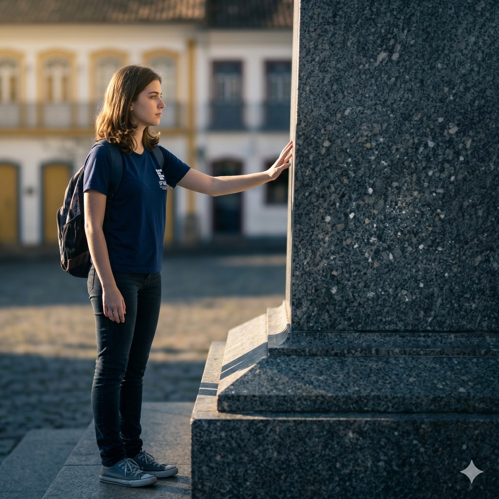
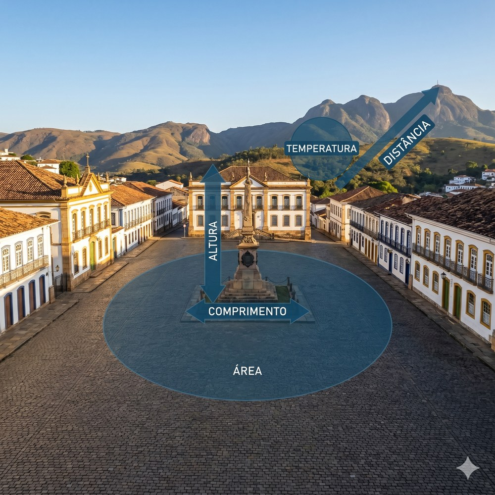
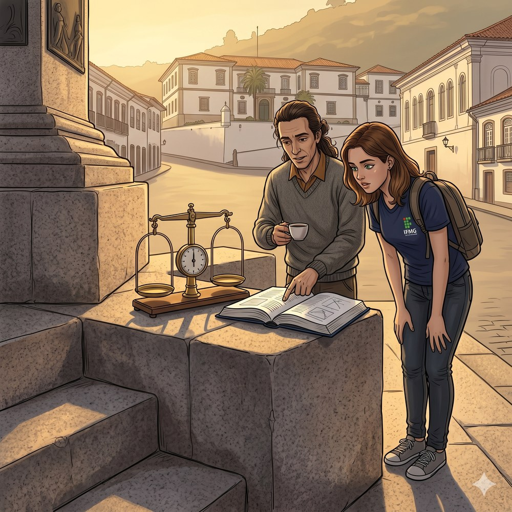
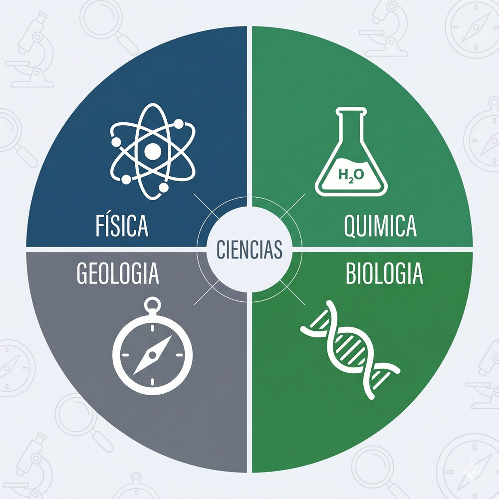
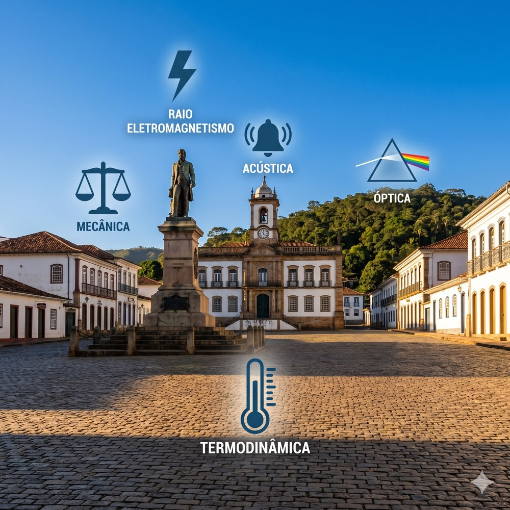
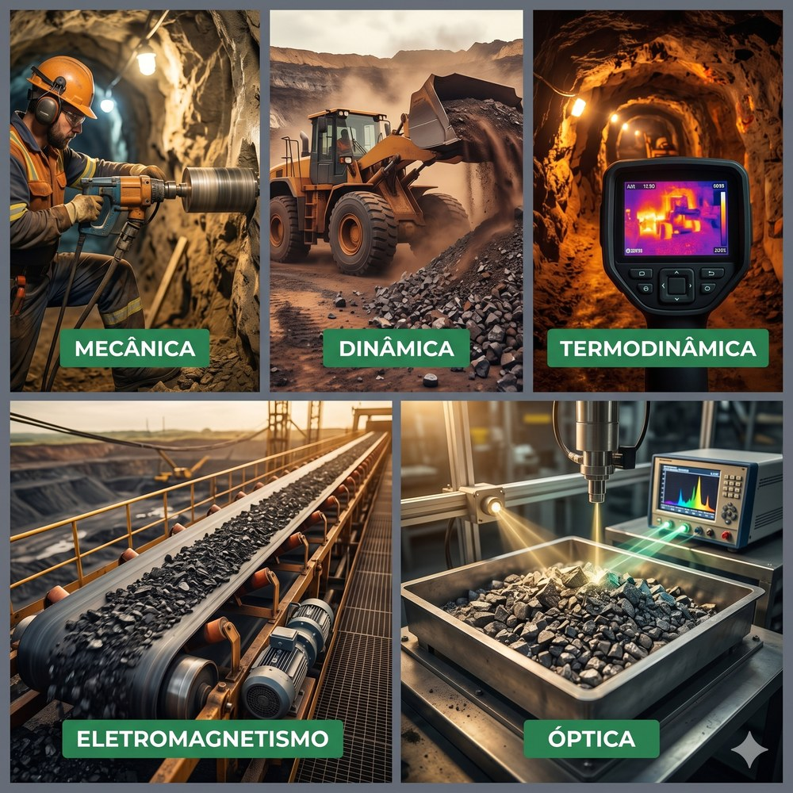
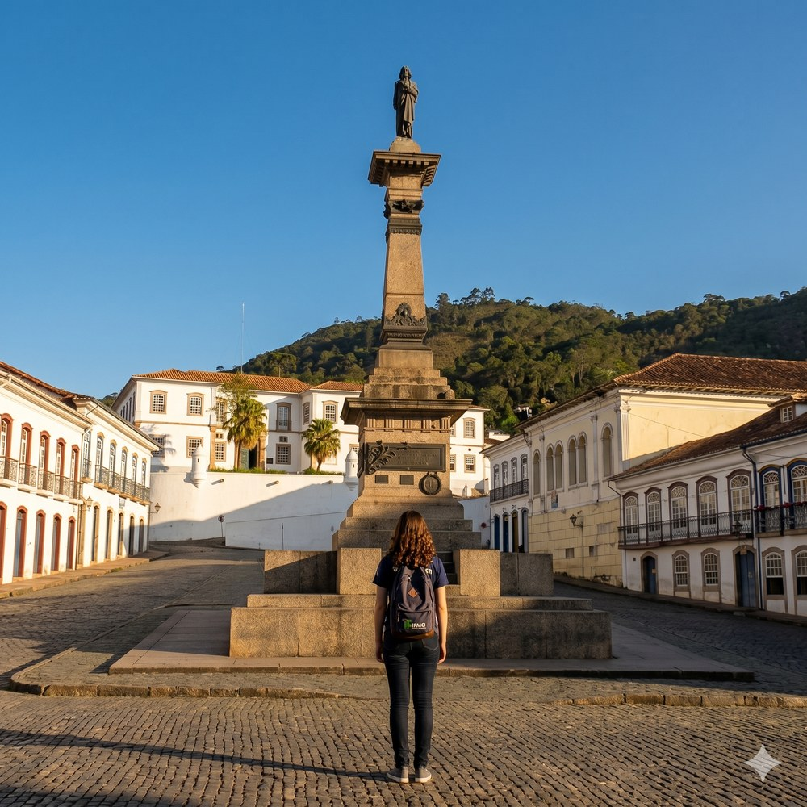
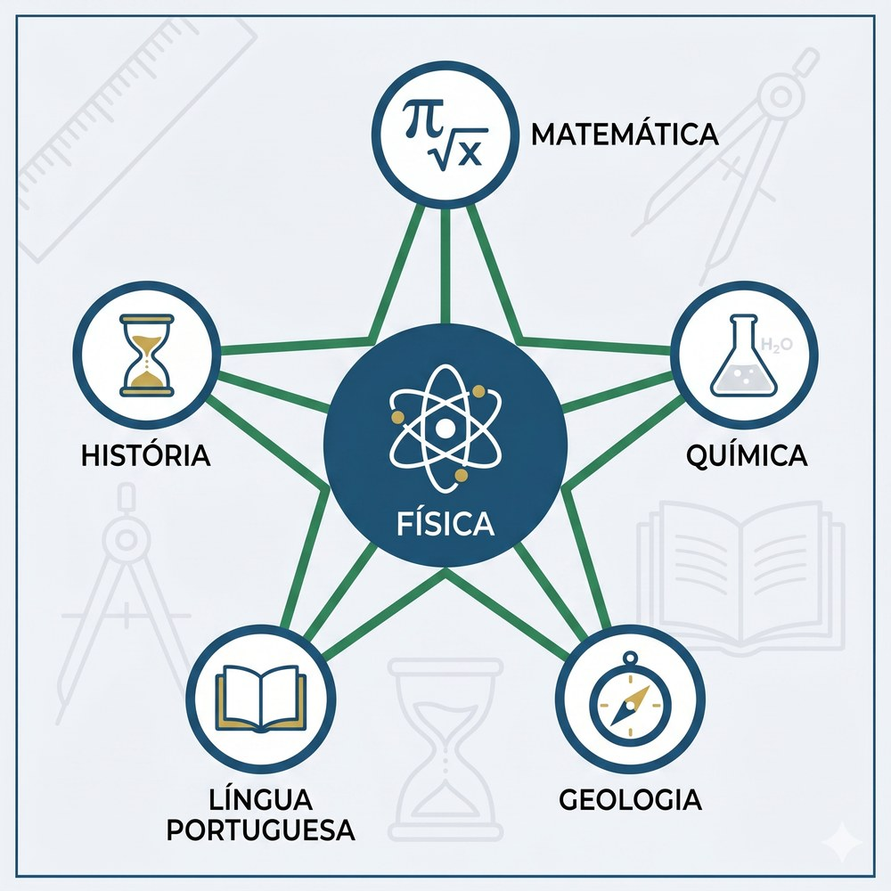
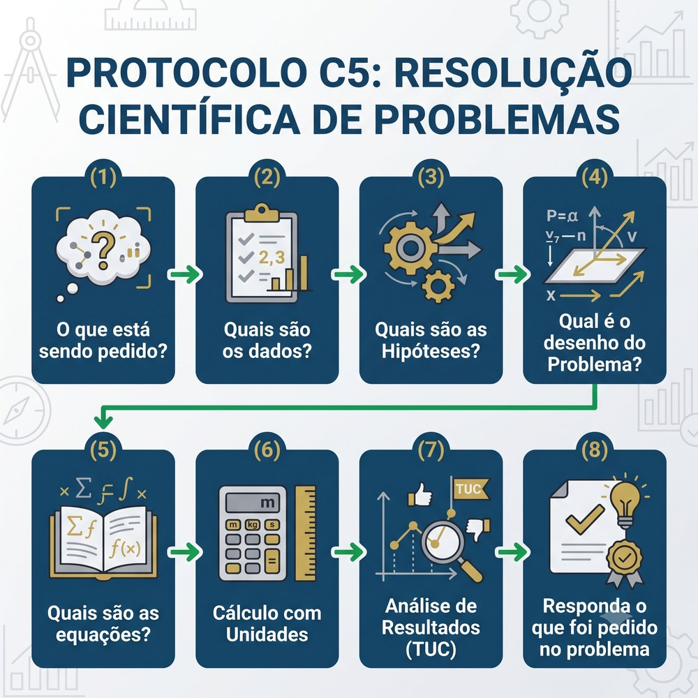

“O livro da natureza está escrito na linguagem da matemática.”
A cidade estava mais fria do que o dia pedia.
Sofia chegou à Praça Tiradentes a pé, subindo a Rua Senador Rocha Lagoa desde o bairro Pilar, às sete e quinze da manhã. O calçamento irregular de pedra-sabão debaixo dos seus pés estava úmido — a garoa havia parado antes do sol nascer, mas a pedra ainda guardava a memória da água. A cada passo, ela sentia o piso ceder levemente sob a sola — as juntas entre as pedras, preenchidas com areia fina, absorviam a pisada de um jeito que o concreto reto do bairro onde crescera nunca havia feito.

Ela parou no centro da praça.
O monumento ao Tiradentes estava diante dela: uma coluna de granito cinza-escuro com quase dezesseis metros de altura, coroada pelos 2,85 metros de bronze da estátua — fundida na Itália pelo escultor Virgílio Cestari e inaugurada em 21 de abril de 1894. O bronze oxidado no topo ainda estava frio e escuro. Mas o sol, saindo atrás do perfil irregular da Serra do Itacolomi ao sudeste, havia tocado o ápice do monumento alguns minutos antes — e agora descia devagar pelo granito como uma mão que acende uma lareira. Onde o sol chegava, os veios de quartzo na pedra acendiam: pontos dourados, filamentos reluzentes, microplanos de feldspato faiscando entre o cinza uniforme. Em trinta segundos, o pedestal pareceu mudar de material. Depois, o sol subiu um grau a mais e os brilhos se apagaram — de volta ao cinza sereno de sempre.
Sofia ficou olhando sem entender bem o que havia visto.
— O que mudou? — disse uma voz a uns quatro metros atrás dela.
Ela se virou. O professor Julio estava ali, apoiado no muro baixo da entrada norte da praça, segurando com as duas mãos uma xícara de café que claramente havia vindo da padaria da esquina com a Rua Conde de Bobadela. Cinquenta e poucos anos, cabelo cacheado castanho preso com um elástico, blusão de lã cinza por cima da camisa. O ano letivo havia começado havia quatro dias; ainda não havia dado nenhuma aula de Física. Mas estava ali às sete e quinze como se tivesse esquecido alguma coisa importante.
— O pedestal — ela respondeu. — Ficou brilhoso por um segundo. Depois voltou ao normal.
— O pedestal ficou brilhoso, você disse. — Ele tomou um gole de café. — Ou a luz ficou brilhosa?
Sofia franziu a testa. Olhou de volta para o granito, que agora estava completamente cinza de novo. Era a mesma pedra. Era o mesmo ângulo de visão. Era uma luz diferente.
— A luz mudou — ela disse lentamente. — A pedra não mudou. Só a luz.
— Então o que você descreveu não é uma propriedade da pedra. É uma propriedade da interação entre a pedra e a luz. — O professor se afastou do muro e andou em direção ao monumento. — Qual grandeza descreve essa interação?
Sofia abriu a boca. Havia alguma coisa sobre ângulo, sobre reflexão, sobre o comprimento de onda da luz amarela do sol baixo. Mas o vocabulário ainda não estava lá.
— Ainda não sei o nome — ela disse.
— Ótimo. — Ele parou diante do pedestal. — Quando você já sabe o nome, para de prestar atenção na coisa. O desconforto de não saber nomear ainda é o único estado mental em que a aprendizagem real acontece.
Silêncio. Um pombo cruzou o calçamento na direção da Escola de Minas, ao norte da praça, como se tivesse uma reunião marcada. O cheiro de café da padaria chegava em ondas pelo vento que descia a Rua Conde de Bobadela. Ao sul, o Museu da Inconfidência ainda tinha as janelas fechadas. O sino da Igreja Nossa Senhora do Carmo — cujo adro se abre diretamente para o canto leste da praça, na Rua Costa Sena — marcou o quarto de hora — um som grave que se propagou pela praça de pedra e se amorteceu ao encontrar as fachadas dos casarões coloniais.
— Você já veio aqui antes — disse o professor.
— Várias vezes.
— E o que via?
— A praça. O monumento. A Escola de Minas ali. — Ela fez um gesto circular com a mão. — O calçamento torto.
— E hoje?
Sofia olhou ao redor com cuidado. O calçamento não era torto — era uma solução de engenharia para uma superfície irregular que precisava drenar água. As pedras não eram empilhadas aleatoriamente — cada uma distribuía carga para as vizinhas, e as juntas de areia absorviam as variações térmicas entre o frio da madrugada e o calor do meio-dia. A estátua no topo do monumento não era apenas bronze — era massa suspensa a quase dezenove metros de altura, com peso, com centro de gravidade, com torque sobre a fundação.
— Grandezas — ela disse. — Eu estou vendo grandezas.
O professor Julio bebeu o último gole de café e abaixou a xícara.
— Exatamente. E para cada grandeza que você for capaz de nomear e medir, a Física te dá uma equação. Para cada equação, um resultado que pode ser verificado. Para cada resultado verificado, um pedaço de mundo que deixou de ser misterioso e virou conhecimento utilizável. — Uma pausa. — Esse é o ofício.
Sofia olhou para o pedestal. O bloco principal tinha, a olho nu, cerca de 1,0 m de comprimento, 0,5 m de largura e 0,4 m de altura. Ela estimou o volume. Lembrou da aula de ciências do nono ano onde a professora havia dito que cada material tem uma densidade característica.
Se eu souber o volume e souber de que rocha é feita...
Ela não disse nada em voz alta. Mas o pensamento estava lá — e era exatamente o tipo de pensamento que a Física usa para começar a trabalhar: uma observação concreta, uma grandeza mensurável, uma propriedade que já está catalogada nos livros.
A praça não era apenas uma praça. Era um laboratório sem paredes, de acesso gratuito, aberto antes das sete da manhã — quando o sol ainda estava aprendendo a acender os veios de quartzo no granito.
E a linguagem que descrevia esse laboratório tinha quatro séculos de construção coletiva atrás dela. Sofia não sabia ainda. Mas havia começado a aprendê-la.
A Praça Tiradentes existe exatamente como descrita no texto — o monumento ao Tiradentes no centro (quase 19 metros de granito e bronze), a Escola de Minas ao norte com sua fachada neoclássica, o Museu da Inconfidência ao sul, a Igreja Nossa Senhora do Carmo junto ao canto leste da praça (Rua Costa Sena), e o perfil da Serra do Itacolomi ao sudeste. O calçamento de pedra-sabão, as juntas de areia, o vento que desce a Rua Conde de Bobadela — tudo está lá, verificável no Street View.
Como acessar e usar o Street View: 1. Acesse o link abaixo — ou abra o Google Maps e pesquise por “Praça Tiradentes, Ouro Preto, MG”. 2. Clique no ícone do boneco amarelo (Pegman) no canto inferior direito do mapa e arraste-o até a rua ou local desejado. 3. Solte o boneco sobre a rua destacada em azul — você entrará no modo Street View. 4. Use as setas na tela para caminhar e o mouse (ou o dedo, no celular) para girar a câmera 360°. 5. Posicione-se em frente ao monumento e gire a câmera para o norte: você vai encontrar a fachada neoclássica da Escola de Minas em pedra e reboco branco, o portão de ferro, o granito escuro do pedestal — e, se rodar para o leste, a entrada da Rua Conde de Bobadela com seus casarões coloniais.
Ouro Preto é isso: Física, história e pedra entrelaçadas em cada esquina. O mesmo calçamento que Sofia pisou ainda está lá — esperando que você o enxergue como um problema de distribuição de forças, não apenas como um piso bonito.
A Praça Tiradentes, coração de Ouro Preto, guarda em cada pedra e em cada sombra as grandezas que a Física sabe nomear. Quando o professor Julio pediu a Sofia que olhasse ao redor e identificasse tudo o que podia ser medido, ela percebeu que a resposta era infinita.

A Praça Tiradentes é o coração político de Ouro Preto desde a era colonial. Foi nela que os inconfidentes articularam o sonho republicano em 1789 — e foi a partir dela que Tiradentes caminhou para o enforcamento no Rio de Janeiro em 1792. O granito cinza-escuro da coluna do monumento, inaugurado em 21 de abril de 1894, foi extraído do Morro da Viúva, no Rio de Janeiro — uma rocha ígnea composta de quartzo, feldspato e biotita. Os engenheiros que projetaram o monumento, um século após a Inconfidência, calcularam forças, volumes e resistências com as mesmas leis que Sofia começou a aprender naquela manhã.
Toda grandeza física é, por definição, uma propriedade do mundo real que pode ser quantificada, comparada e expressa em unidades padronizadas. O Sistema Internacional de Unidades (SI), adotado internacionalmente em 1960 pela Conferência Geral de Pesos e Medidas, estabelece sete grandezas fundamentais: comprimento (metro), massa (quilograma), tempo (segundo), temperatura termodinâmica (kelvin), corrente elétrica (ampère), intensidade luminosa (candela) e quantidade de matéria (mol). Todas as demais grandezas — velocidade, força, pressão, energia — são grandezas derivadas, obtidas por combinações dessas sete.
Para o técnico em mineração, a Praça Tiradentes é um catálogo de materiais de engenharia: granito, quartzito, ferro fundido, pedra-sabão. Identificar materiais pelo aspecto visual, estimar volumes por medição direta e calcular massas a partir da densidade são tarefas de rotina em campo — exigidas antes de qualquer transporte de rocha, qualquer projeto de suporte de galeria e qualquer estimativa de reserva. O raciocínio que Sofia aplica ao pedestal é o mesmo que o técnico aplica ao bloco de minério.
O laboratório de pedra
Quando o professor Julio perguntou “o que há de Física nesta praça?”, Sofia olhou ao redor e sentiu, pela primeira vez, que a questão era enorme. Havia força no peso dos blocos sobre o solo. Havia energia na luz que chegava pela Serra do Itacolomi. Havia calor no contraste entre o granito frio das sombras e o calçamento que já começava a aquecer sob o sol. Havia som nos passos que ecoavam diferente nos trechos de pedra-sabão e nos trechos de paralelepípedo.
— Tudo isso é Física — disse o professor. — E para descrever cada um desses fenômenos, você precisa de pelo menos uma coisa em comum.
— Uma medida — Sofia respondeu.
— Exatamente. Uma grandeza física. Algo que existe no mundo e pode ser quantificado. O comprimento do pedestal. A temperatura do ar. A massa do bloco. O tempo que o sino levou para parar de vibrar. Sem grandeza, a Física não fala.
Ela se aproximou do pedestal e o examinou com atenção. O bloco principal tinha, a olho nu, cerca de 1,0 m de comprimento, 0,5 m de largura e 0,4 m de altura. Sofia começou pelo mais acessível: o volume.
| Símbolo | Grandeza | Unidade SI |
|---|---|---|
| V | Volume do bloco | m³ (metro cúbico) |
| c | Comprimento | m (metro) |
| l | Largura | m (metro) |
| h | Altura | m (metro) |
Agora ela precisava da densidade. O granito apresenta densidade média de 2 700 kg/m³ — valor que Sofia confirmou rapidamente no celular, anotou no caderno e sublinhou.
| Símbolo | Grandeza | Unidade SI |
|---|---|---|
| m | Massa do bloco | kg (quilograma) |
| ρ | Densidade do material (lê-se “rô”) | kg/m³ |
| V | Volume do bloco | m³ |
Sofia olhou para o bloco. Mais de meia tonelada. E ela havia ficado encostada nele, ombro contra a pedra, como se fosse um poste qualquer de calçada.
— Física — ela murmurou — é enxergar o que não dá para ver só olhando.
As sete grandezas fundamentais do SI — comprimento, massa, tempo, temperatura, corrente elétrica, intensidade luminosa e quantidade de matéria — são os tijolos básicos dessa linguagem. Cada fenômeno da praça, por mais complexo que pareça, pode ser descrito em termos de combinações dessas sete grandezas. É assim que a Física transforma observação em conhecimento: nomeando, medindo, calculando.
A praça não era apenas um espaço histórico. Era um laboratório a céu aberto, gratuito, disponível todos os dias antes das sete da manhã — quando o sol ainda estava aprendendo a acender os veios de quartzo no granito do Tiradentes.
No próximo passo, Sofia vai descobrir que medir é apenas metade do trabalho. A outra metade é saber quando a medida confirma a teoria — e o que fazer quando não confirma.
O cálculo que Sofia fez no caderno era apenas metade do caminho. A outra metade esperava na balança — e na diferença entre o que se prevê no papel e o que se encontra na pedra.

O monumento ao Tiradentes foi inaugurado em 21 de abril de 1894, um ano após a proclamação da República. Antes de posicionar um único bloco de granito, os engenheiros do projeto trabalharam em prancheta: calcularam a resistência do solo da Praça Tiradentes, a distribuição de cargas entre os elementos estruturais, as dimensões de cada componente. Esse foi o trabalho teórico. Depois, no canteiro, cada bloco foi medido, pesado, encaixado e verificado. Esse foi o trabalho experimental. Os dois precisavam concordar — e quando não concordavam, o projeto era revisto. O monumento que existe hoje é o resultado material desse ciclo.
A Física teórica constrói modelos — representações matemáticas simplificadas da realidade que permitem fazer previsões sem instrumentos. A Física experimental testa esses modelos: mede, compara, ajusta, rejeita ou confirma. Nenhuma das duas funciona sozinha: uma teoria sem experimento é hipótese; um experimento sem teoria é dado bruto sem interpretação. O ciclo de validação — observação, hipótese, experimento, revisão — foi sistematizado por Galileu Galilei no século XVII e permanece o núcleo do método científico até hoje. A diferença entre o valor teórico e o valor medido é quantificada pelo erro relativo, expresso em porcentagem.
Na mineração, o ciclo teórico-experimental se repete em cada etapa da operação. O geólogo constrói um modelo de bloco de jazida a partir de perfis de sondagem — trabalho teórico. O técnico de campo perfura, coleta e pesa amostras para verificar o modelo — trabalho experimental. Se os valores concordam dentro de uma margem aceitável, o modelo é confiável. Se divergem, o modelo é corrigido. Um erro de 3% na estimativa de massa de um carregamento de 1 000 t representa 30 t a mais ou a menos que o sistema esperava processar — diferença que afeta contratos, logística e segurança.
O diálogo na praça
O professor Julio chegou enquanto Sofia ainda anotava as dimensões do bloco.
— Você chegou a 540 kg — ele disse, olhando as contas. — Agora imagine os engenheiros de 1894, na prancheta, fazendo exatamente esse mesmo cálculo antes de construir. Eles partiram de uma equação como a sua: densidade multiplicada por volume.
— Mas e se a pedra não fosse granito puro? — Sofia franziu a testa. — E se tivesse uma inclusão de minerais mais densos?
— Exatamente. Aí a teoria diverge do experimento. E quando divergem...
— ...a gente mede de novo — ela completou.
— Ou revisa o modelo. Ou os dois. — Ele apontou para o pedestal. — Essa diferença entre o que você calculou e o que a balança marcaria tem um nome. Chama-se erro relativo.
| Símbolo | Grandeza | Unidade |
|---|---|---|
| Er | Erro relativo | % (porcentagem) |
| Vm | Valor medido experimentalmente | mesma unidade da grandeza |
| Vt | Valor teórico (calculado pelo modelo) | mesma unidade da grandeza |
| | | | Módulo — garante resultado sempre positivo | — |
Um erro de 3% pode parecer pequeno. Em uma construção monumental de 1894, era aceitável. Em uma mina moderna que movimenta mil toneladas de minério por dia, um erro de 3% representa 30 toneladas a mais ou a menos que o sistema esperava processar — diferença que afeta contratos, segurança estrutural e o balanço econômico da operação inteira.
| Dimensão | Física Teórica | Física Experimental |
|---|---|---|
| Ferramenta principal | Matemática e modelos | Instrumentos e medições |
| Produto gerado | Previsões e equações | Dados e resultados reais |
| Exemplo no monumento (1894) | Cálculo teórico da carga sobre o pedestal | Medição real da massa de cada bloco no canteiro |
| Limitação inerente | Depende de hipóteses simplificadoras | Depende da precisão dos instrumentos |
| O que fazer quando divergem | Revisar o modelo | Repetir o experimento com instrumentação melhor |
| Exemplo na mineração atual | Modelo de bloco da jazida por sondagem | Pesagem das amostras coletadas em campo |
A lição central deste tópico foi sistematizada por Galileu Galilei no século XVII, quando ele deixou de aceitar as verdades aristotélicas sobre o movimento e foi medir o tempo de queda de objetos com diferentes massas. Não precisou de grandes instrumentos — precisou de uma pergunta precisa, de um experimento repetível e de honestidade intelectual para aceitar o resultado mesmo quando contrariava a autoridade de sua época.
Teoria e experimento são os dois pés da Física. Andar com apenas um leva a tropeços — e na mineração, tropeços têm consequências que vão muito além de uma nota baixa.
No tópico seguinte, Sofia vai descobrir que a Física não está sozinha entre as ciências — e que saber onde ela termina e onde começa a Química ou a Geologia é tão importante quanto dominar as equações.
A Física não está sozinha entre as ciências. Química, Biologia e Geologia olham para o mesmo pedaço de mundo — cada uma com suas perguntas e suas ferramentas. Saber onde uma termina e outra começa é tão importante quanto dominar as equações.

A Escola de Minas de Ouro Preto, fundada em 1876 pelo geólogo francês Henri Gorceix a pedido de D. Pedro II, foi a primeira instituição de ciências aplicadas do Brasil a reunir, sob o mesmo teto, professores de Física, Química, Geologia e Mineralogia — exigindo que seus alunos dominassem essas linguagens em conjunto. Gorceix partiu de um diagnóstico preciso: o minério está lá com suas propriedades físicas, químicas e geológicas simultaneamente, e o engenheiro precisa falar todas as línguas ao mesmo tempo. Cento e cinquenta anos depois, o IFMG-OP continua esse mesmo projeto formativo — desta vez no nível técnico, com estudantes de quinze e dezesseis anos.
As ciências da natureza — Física, Química, Biologia e Geologia — compartilham o mesmo compromisso metodológico: entender o mundo natural por meio de observação sistemática, hipótese, experimento e revisão. O que as diferencia é o objeto de estudo e o tipo de pergunta que cada uma faz ao mundo. A fronteira entre elas é real, mas porosa: um fenômeno de lixiviação em mina envolve, ao mesmo tempo, a Química das reações ácido-base, a Física do fluxo de fluido e a Geologia da estrutura da rocha encaixante. Identificar a qual ciência pertence cada aspecto do problema é o primeiro passo para escolher a ferramenta analítica correta.
O técnico em mineração opera cotidianamente na interseção dessas quatro ciências. Ele analisa rochas pela cor, textura e clivagem (Geologia), avalia reações de lixiviação e flotação (Química), monitora impactos em corpos d'água (Biologia) e calcula forças, pressões e fluxos de energia (Física). Saber a quem perguntar — qual ciência, qual equação — poupa tempo, evita erros e, em ambiente de mina, pode salvar vidas.
A pergunta de cada ciência
Sofia olhou para a fachada norte da praça: a Escola de Minas com suas janelas altas de ferro forjado, a calçada de quartzito esbranquiçado que subia levemente em direção à entrada, o jardim interno com espécies nativas que se via pela grade do portão. Ela pensou: o que cada ciência veria ali?
A Física pergunta: como as coisas se movem, interagem e trocam energia? Ela responde com equações que relacionam grandezas mensuráveis. Qual a força que o peso do telhado exerce sobre as colunas de pedra? Que velocidade teria um objeto caindo do cume do campanário vizinho? Qual a temperatura interna das paredes de pedra às três da tarde?
A Química pergunta: de que as coisas são feitas e como a matéria se transforma em nível atômico e molecular? Que minerais compõem o quartzito da calçada da Escola? Que reação ocorre quando a chuva levemente ácida ataca o calcário das molduras coloniais ao longo de décadas?
A Biologia pergunta: como os seres vivos se organizam, reproduzem e interagem com o ambiente? Que espécies de líquen crescem nas frestas do granito do monumento? Como o pombo da praça regula sua temperatura corporal com 10 °C a mais que o ar ao redor?
A Geologia pergunta: como a Terra se formou, como as rochas se originaram e como o relevo se transformou ao longo do tempo geológico? Quando e em que condições esse quartzito da calçada se consolidou? Qual a direção de mergulho das camadas que afloram na Serra do Itacolomi ao fundo do horizonte?
| Ciência | Objeto central | Pergunta típica na mina | Exemplo regional |
|---|---|---|---|
| Física | Energia, força, movimento, ondas | Qual pressão a coluna de rocha exerce sobre o suporte da galeria? | Cálculo de carga nas vigas da Mina de Passagem, Mariana |
| Química | Composição e transformação da matéria | Qual reagente separa o ouro do minério sulfetado com maior eficiência e menor impacto? | Processo de cianetação no tratamento de minério no Quadrilátero Ferrífero |
| Biologia | Seres vivos e relações ecológicas | Como o rejeito da mineração afeta a fauna do Rio Gualaxo? | Monitoramento ambiental após rompimento de Fundão (Mariana, 2015) |
| Geologia | Origem e estrutura das rochas e relevo | Onde está o filão de maior teor e qual é sua profundidade estimada? | Mapeamento das zonas de cisalhamento no Quadrilátero Ferrífero |
A Física não pergunta de que a pedra é feita — isso é Química. Não pergunta como ela se formou há 580 milhões de anos — isso é Geologia. Não pergunta quais fungos crescem nas suas fraturas — isso é Biologia.
A Física pergunta: qual é a força necessária para mover essa pedra? Qual energia foi liberada quando ela tombou? A que velocidade uma onda sísmica atravessa essa formação rochosa?
E para responder, ela usa Matemática — não porque seja superior às outras ciências, mas porque o tipo de pergunta que ela faz exige respostas quantitativas, universais e verificáveis.
| Símbolo | Grandeza | Unidade SI |
|---|---|---|
| F | Força resultante sobre o objeto | N (newton) |
| m | Massa do objeto | kg (quilograma) |
| a | Aceleração produzida pela força resultante | m/s² |
Entender onde a Física começa e termina não é uma questão de territorialidade acadêmica. É uma questão prática e urgente: saber qual ferramenta usar poupa tempo, evita erros e salva vidas — especialmente em ambientes de mineração, onde as quatro ciências trabalham simultaneamente no mesmo metro quadrado de rocha.
No próximo tópico, Sofia vai descobrir que a própria Física se divide em áreas especializadas — e que cada grande fenômeno de uma mina tem um endereço dentro dessa divisão.
Cada fenômeno que Sofia observou naquela manhã tinha um endereço dentro da Física — e saber esse endereço é o primeiro passo para encontrar a equação certa.

Ouro Preto foi erguida sobre o Quadrilátero Ferrífero, uma das formações geológicas mais ricas do planeta. Os colonizadores do século XVIII não conseguiam explicar os tremores de terra ocasionais, as correntes de ar frio que emergiam das galerias profundas, o brilho dourado das veias de quartzo à luz das tochas. Hoje, cada um desses fenômenos tem um endereço preciso dentro da Física — e uma equação que o descreve com exatidão. A história da Física é, em parte, a história de dar endereço e nome a fenômenos que antes eram apenas assombrosos ou sobrenaturais.
A Física se organiza em cinco grandes áreas, cada uma especializada em uma classe de fenômenos: Mecânica (movimento, força e equilíbrio), Termologia e Termodinâmica (calor, temperatura e fluxo de energia térmica), Óptica (luz, visão e radiação eletromagnética visível), Eletromagnetismo (campos elétricos, magnéticos e correntes elétricas) e Física Moderna (estrutura atômica, nuclear, relatividade e mecânica quântica). Essa divisão é uma estratégia analítica — a natureza não respeita as fronteiras entre as áreas, e um fenômeno real frequentemente envolve duas ou mais delas simultaneamente.
Em uma mina, os fenômenos físicos são simultaneamente riscos e recursos. A queda de um bloco de rocha é risco de Mecânica — calculável pela Segunda Lei de Newton e pela energia cinética. O calor das galerias profundas é risco de Termologia — monitorável pelo gradiente geotérmico. A corrente elétrica nas bombas de drenagem é recurso de Eletromagnetismo — dimensionável pela lei de Ohm e pela potência elétrica. O técnico que identifica a área da Física envolvida sabe qual equação aplicar, qual instrumento usar e qual norma consultar — especialmente a NR-22 (Segurança e Saúde Ocupacional na Mineração).
Mapa: fenômenos → áreas da Física
O professor Julio sacou um pequeno caderno do bolso do blusão e abriu em uma página em branco.
— Vou fazer uma lista — disse ele. — Você me diz o que acontece em cada caso.
E foi assim que Sofia aprendeu, no calçamento da Praça Tiradentes, que a Física tem cinco grandes divisões — e que todas elas aparecem simultaneamente em qualquer mina do Quadrilátero Ferrífero.
| Fenômeno observado | O que acontece | Área da Física | Grandeza central |
|---|---|---|---|
| Bloco de rocha caindo em galeria | Aceleração progressiva, impacto com o chão | Mecânica (Dinâmica) | Força, aceleração, energia cinética |
| Tremor de terra no Quadrilátero Ferrífero | Vibração do solo, ondas propagadas em todas as direções | Mecânica (Ondas e vibrações) | Frequência, amplitude, velocidade de onda |
| Calor intenso nas galerias profundas (> 500 m) | Temperatura cresce ~3 °C a cada 100 m de profundidade | Termologia / Termodinâmica | Temperatura, fluxo de calor, gradiente geotérmico |
| Bombas elétricas de drenagem | Energia elétrica convertida em trabalho mecânico sobre a água | Eletromagnetismo | Tensão, corrente, potência elétrica |
| Raios X na análise de composição de minério | Ondas de alta energia penetram a rocha, revelam estrutura interna | Óptica / Física Moderna | Comprimento de onda, energia do fóton |
| Radioatividade em rochas uraníferas | Emissão espontânea de partículas do núcleo atômico | Física Nuclear (ramo da Física Moderna) | Atividade radioativa, meia-vida |
| Correia transportadora movendo minério | Força de tração convertida em deslocamento e potência | Mecânica (Estática e Dinâmica) | Força, velocidade, potência mecânica |
Um mesmo evento real pode envolver mais de uma área. Um deslizamento de talude, por exemplo, envolve Mecânica (forças e movimento da rocha), Termodinâmica (energia liberada no impacto) e Ondas (vibração sísmica gerada pela queda). A divisão em áreas é uma estratégia analítica — não uma divisão rígida da natureza.
| Símbolo | Grandeza | Unidade SI |
|---|---|---|
| Ec | Energia cinética | J (joule) |
| m | Massa do bloco | kg |
| v | Velocidade no instante considerado | m/s |
As cinco áreas da Física não são disciplinas separadas — são janelas diferentes para o mesmo universo físico. Quanto mais janelas o técnico souber abrir, mais completo será o diagnóstico diante de qualquer problema de campo.
No último tópico do Ato II, Sofia vai descobrir como todas essas janelas se abrem simultaneamente em uma operação mineira real — e por que a Física não é um obstáculo entre ela e a profissão, mas o mapa que ela vai usar para navegar por ela.
Tudo o que Sofia aprendeu naquela manhã — grandezas, equações, áreas da Física — converge para um lugar concreto: o chão de uma mina. A linguagem que ela começou a decifrar no calçamento da praça é a mesma que move correias, perfura rochas e drena galerias.

O ouro de Minas Gerais financiou as igrejas barrocas de Aleijadinho, os chafarizes de bronze, a própria cidade de Ouro Preto — e virou o principal produto de exportação do Império Português no século XVIII. Por trás de toda essa riqueza havia técnica — e técnica é Física aplicada. Os capitães-de-mina e engenheiros coloniais calculavam pressões de água nas galerias, ângulos de estabilidade dos taludes, resistências das vigas de madeira nos suportes subterrâneos. Não conheciam o nome “Física Clássica” — mas aplicavam suas leis o tempo todo, com instrumentos rudimentares e conhecimento acumulado ao longo de gerações de mineradores.
A mineração moderna é, em grande medida, Física aplicada em escala industrial. Prospecção geofísica por ondas sísmicas e campos magnéticos, fragmentação de rocha por explosivos (termodinâmica e ondas de choque), transporte de minério por correias e polpas em tubulações (mecânica dos fluidos e potência mecânica), ventilação de galerias (dinâmica dos fluidos e termodinâmica) e estabilidade de taludes (mecânica dos sólidos e critérios de resistência de materiais) — cada processo obedece a leis físicas identificáveis, calculáveis e verificáveis. A Física não é pano de fundo da mineração: é a engenharia que a sustenta.
O Técnico em Mineração formado pelo IFMG-OP vai trabalhar em ambientes onde a Física não é disciplina escolar: é ferramenta de trabalho diário. Reconhecer os fenômenos físicos em campo, associá-los às equações corretas e tomar decisões baseadas em dados quantitativos é a diferença entre um técnico mediano e um técnico de referência. A NR-22 (Segurança e Saúde Ocupacional na Mineração) exige que projetos de ventilação, drenagem e estabilidade sejam fundamentados em cálculos físicos documentados — e o técnico precisa compreender esses cálculos para aplicá-los com autonomia.
Cinco processos, cinco leis
Sofia olhou pela última vez para o monumento ao Tiradentes. O sol já estava alto — o granito havia perdido o brilho dourado da manhã e voltado ao cinza sereno de sempre. Mas ela agora sabia: aquele cinza pesava 540 kg por bloco. E o que acontecia em qualquer mina do Quadrilátero Ferrífero podia ser descrito com a mesma linguagem que ela havia começado a aprender naquele calçamento.
Quando a perfuratriz abre um furo na rocha e o explosivo é detonado, a energia química converte-se em energia mecânica — uma onda de choque que fragmenta a rocha controladamente. A eficiência da detonação depende, entre outros fatores, da pressão gerada dentro do furo.
| Símbolo | Grandeza | Unidade |
|---|---|---|
| P | Pressão de detonação | Pa (pascal) |
| ρe | Densidade do explosivo | kg/m³ |
| D | Velocidade de detonação da mistura | m/s |
A correia transportadora é o músculo da mina: move toneladas de minério fragmentado do ponto de extração até o britador ou o pátio de estocagem. A potência elétrica necessária depende da força de tração e da velocidade de deslocamento da correia.
| Símbolo | Grandeza | Unidade SI |
|---|---|---|
| P | Potência mecânica | W (watt) |
| F | Força de tração necessária | N (newton) |
| v | Velocidade da correia | m/s |
A água subterrânea se infiltra permanentemente nas galerias. As bombas precisam vencer a pressão da coluna d'água para extrair esse volume. Quanto mais profunda a galeria, maior a pressão a superar.
| Símbolo | Grandeza | Unidade SI |
|---|---|---|
| Ph | Pressão hidrostática | Pa |
| ρ | Densidade do fluido (água ≈ 1 000 kg/m³) | kg/m³ |
| g | Aceleração gravitacional (≈ 9,8 m/s²) | m/s² |
| h | Profundidade abaixo da superfície livre | m |
Galerias subterrâneas acumulam gases tóxicos (CO, CO2, gases de detonação), calor e poeira respirável. A ventilação forçada repõe ar fresco e mantém as condições dentro dos limites estabelecidos pela NR-22. A vazão de ar é controlada pela geometria da galeria e pela velocidade do fluxo.
| Símbolo | Grandeza | Unidade SI |
|---|---|---|
| Q | Vazão volumétrica de ar | m³/s |
| A | Área da seção transversal da galeria | m² |
| v | Velocidade média do ar no trecho | m/s |
Antes de abrir uma mina a céu aberto, engenheiros calculam o ângulo máximo que o talude pode assumir sem deslizar. O fator de segurança compara as forças estabilizadoras com as forças desestabilizadoras — e seu resultado é a diferença entre uma operação segura e um colapso.
| Símbolo | Grandeza | Unidade |
|---|---|---|
| FS | Fator de segurança (adimensional) | — |
| c | Coesão do material rochoso | Pa |
| σ | Tensão normal na superfície de ruptura potencial | Pa |
| φ | Ângulo de atrito interno do material (lê-se “fi”) | graus (°) |
| τ | Tensão cisalhante atuante na superfície de ruptura | Pa |
Sofia olhou para a fachada da Escola de Minas. Através das janelas altas de ferro forjado, ela imaginou os engenheiros que haviam estudado ali — os que projetaram as minas do Quadrilátero no final do século XIX, os que calcularam as correias e as bombas e os taludes das décadas seguintes. Eles aprenderam essas equações nos mesmos corredores que ela percorreria nos próximos três anos.
A Física não era um obstáculo entre ela e a profissão. Era o mapa.
O sol já estava alto quando Sofia voltou ao ponto onde havia começado — o mesmo calçamento de pedra-sabão, a mesma distância do pedestal de granito, o mesmo pombo que caminhava pelo lado norte da praça como se também estivesse fazendo a sua pesquisa matinal.

Mas ela era outra.
Não que soubesse mais equações — sabia dez, que era muito mais do que zero, mas ainda era pouco diante do que viria nos próximos meses. O que havia mudado era uma outra coisa, mais difícil de nomear: ela havia aprendido a ver. O calçamento irregular não era apenas chão — era um conjunto de forças em equilíbrio, pedras distribuindo carga, juntas de areia absorvendo as variações térmicas entre a madrugada e o meio-dia. O vento que descia a Rua Conde de Bobadela não era apenas frio — era um fluxo de massa de ar com velocidade mensurável, transportando calor de um ponto a outro segundo as leis da termodinâmica. O sino da Igreja do Carmo, que marcou o fim da hora, não era apenas um som — era uma onda mecânica com frequência, amplitude e velocidade de propagação, atravessando o ar frio da praça e amortecendo contra as fachadas dos casarões coloniais.
Cinco janelas se haviam aberto naquela manhã.
A primeira mostrou que a Física começa com uma observação concreta e uma grandeza mensurável — e que o granito pesado de meia tonelada era, antes de tudo, uma pergunta: como você sabe quanto pesa? A segunda revelou que toda resposta teórica precisa de um experimento para ser confirmada — e que a diferença entre o que se calcula e o que se mede tem um nome, um número e consequências reais. A terceira localizou a Física dentro de um ecossistema de ciências que se completam — e mostrou que saber os limites de cada uma é tão importante quanto dominar os conceitos de uma só. A quarta mapeou os fenômenos do mundo em endereços dentro da Física — cada um com sua área, suas grandezas, suas equações características. A quinta conectou tudo isso ao chão firme da mineração: cinco processos industriais, cinco leis físicas, uma profissão inteira sustentada por essa linguagem.
O professor Julio parou ao seu lado, também olhando para o monumento.
— E então?
Sofia fechou o caderno.
— Preciso aprender a medir o tempo — ela disse. — Com a mesma precisão com que hoje calculei a massa.
— Na próxima trilha — respondeu o professor —, vamos aprender exatamente isso. Como os seres humanos aprenderam a medir o tempo com precisão de átomo.
Ela colocou o caderno na mochila, olhou uma última vez para o granito cinza-escuro do pedestal — aquele cinza sereno que havia brilhado dourado por trinta segundos ao amanhecer — e começou a caminhar em direção à escola.
A régua do mundo estava em suas mãos. Ela ainda não sabia usar todas as suas escalas — mas havia começado.
Atividades que articulam a Física da Trilha T01 com outras disciplinas do currículo do Técnico em Mineração Integrado ao Ensino Médio. Cada atividade exige análise, síntese ou avaliação — Bloom L4 a L6.
Quando a Física se encontra com outra disciplina, o caminho até a resposta segue oito etapas — sempre as mesmas. Esse protocolo chama-se Componente 5 e é o método que técnicos de mineração usam para resolver problemas reais. Pratique-o aqui: você vai reaplicá-lo integralmente no Trabalho (TR) desta trilha.

| Etapa | Nome | O que fazer |
|---|---|---|
| 1 | O que está sendo pedido? | Releia o enunciado. Escreva com suas palavras o que é pedido. |
| 2 | Quais são os dados? | Liste cada grandeza com seu símbolo, valor e unidade. |
| 3 | Quais são as hipóteses? | Declare o que vai assumir (atrito nulo, regime estacionário etc.). |
| 4 | Qual é o desenho do problema? | Faça um esboço, diagrama ou esquema simples da situação. |
| 5 | Quais são as equações? | Identifique a equação do TT. Isole a variável pedida. |
| 6 | Cálculo com unidades | Substitua os valores. Acompanhe as unidades até o resultado. |
| 7 | Análise de resultados | O resultado faz sentido? Compare com valores típicos. |
| 8 | Responda o que foi pedido | Formule a resposta completa ao que o problema perguntou. |

O pedestal do monumento ao Tiradentes não é um paralelepípedo perfeito: ele tem uma base mais larga, molduras escalonadas e um topo mais estreito antes da estátua. Sofia estimou o bloco principal como 1,0 m × 0,5 m × 0,4 m — uma simplificação. Descreva um método matemático para decompor esse volume real em dois ou três sólidos geométricos simples (paralelepípedos, prismas) de modo a obter uma estimativa mais precisa. Apresente sua decomposição com um esboço numerado, calcule cada volume parcial e some ao total. Em seguida, calcule o erro relativo entre sua estimativa composta e a estimativa simples de Sofia (540 kg). Por fim, explique como esse raciocínio de decomposição geométrica é aplicado no cálculo de volume de jazidas minerais com geometria irregular — por que a subdivisão em blocos simples é a base do método de cubagem de reservas?
A densidade do granito (ρ ≈ 2 700 kg/m³) depende da composição mineralógica exata. Usando os dados a seguir — quartzo: ρ = 2 650 kg/m³; feldspato potássico: ρ = 2 560 kg/m³; biotita: ρ = 3 050 kg/m³ — calcule a densidade média de um granito composto por 40% de quartzo, 45% de feldspato e 15% de biotita (use média aritmética ponderada pelas frações volumétricas). Compare o resultado com o valor de 2 700 kg/m³ utilizado por Sofia e calcule o erro relativo. Agora avalie: em que situações da mineração a composição mineralógica precisa ser determinada com precisão antes de qualquer cálculo físico de massa? Cite dois exemplos concretos em que um erro de composição levaria a uma decisão operacional incorreta.
A prospecção geofísica por refração sísmica usa ondas mecânicas (área da Física: Mecânica das Ondas) para mapear camadas de rocha sem perfurar o terreno. A velocidade de propagação varia com o tipo de rocha: granito ≈ 5 500 m/s; quartzito ≈ 6 000 m/s; solo inconsolidado ≈ 600 m/s. (a) Calcule o tempo que uma onda leva para percorrer 120 m em granito e em solo inconsolidado. (b) Explique como essa diferença de tempo de chegada permite identificar a presença e a profundidade de cada camada — qual o raciocínio físico por trás da interpretação? (c) Avalie: se o sinal sísmico registrado no campo chegou 0,18 s após a detonação e a distância entre a fonte e o receptor era de 108 m, que tipo de material provavelmente ocupa o subsolo nesse ponto? Justifique com cálculo.
O título deste Tema 1 é “A Régua do Mundo: Medidas, Padrões e Escalas”. A expressão “régua do mundo” é uma metáfora — ela compara a Física a um instrumento de medição universal. (a) Identifique no texto do Ato I mais duas metáforas ou comparações usadas para tornar conceitos físicos acessíveis. Para cada uma: identifique o recurso linguístico e explique o conceito físico que ele comunica. (b) Avalie se cada metáfora é precisa ou se poderia induzir a uma compreensão incorreta do conceito — cite o risco específico. (c) Proponha uma metáfora original, não presente no texto, para explicar o conceito de erro relativo a um estudante de quinze anos sem formação técnica prévia. Explique por que sua metáfora é adequada e quais seriam seus limites de validade como analogia científica.
O ouro colonial era separado da areia de rio por lavagem em bateia — uma técnica que usa a diferença de densidades entre os materiais. O ouro tem densidade ρ ≈ 19 300 kg/m³; a areia de rio típica tem ρ ≈ 1 600 kg/m³. (a) Calcule a razão entre as duas densidades e explique fisicamente por que essa diferença faz o ouro depositar no fundo e a areia ser arrastada pela corrente d'água — use o conceito de empuxo (Princípio de Arquimedes) na explicação. (b) Avalie: os garimpeiros coloniais do século XVII aplicavam uma lei física — o Princípio de Arquimedes — sem nunca tê-la estudado formalmente. Isso significa que faziam ciência? Ou apenas técnica? Justifique à luz do que você aprendeu sobre método científico (observação, hipótese, experimento, revisão) nesta trilha. (c) Proponha um experimento simples, realizável em sala de aula com materiais de baixo custo, que demonstre o princípio da separação por densidade — e explique como ele seria usado para introduzir o Princípio de Arquimedes a uma turma que ainda não o estudou formalmente.
“E como eu palmilhasse vagamente
uma estrada de Minas, pedregosa…”
“a máquina do mundo, repelida,
se foi miudamente recompondo,
enquanto eu, avaliando o que perdera,
seguia vagaroso, de mãos pensas”
Análise da obra
A linguagem da Física e a linguagem da poesia perseguem o mesmo objetivo por caminhos opostos: nomear o que existe. Drummond, em A Máquina do Mundo, descreve um caminhante que encontra, numa estrada de Minas, a revelação completa do funcionamento do universo — e recusa. O poema não é sobre Física; é sobre o peso de compreender. Mas a estrutura é a mesma: um observador diante de um fenômeno, uma linguagem que tenta capturá-lo, e a consciência de que toda representação é parcial.
Análise da trilha
Sofia, diante do pedestal de granito, fez exatamente o que o caminhante de Drummond fez — olhou, nomeou, mediu. A diferença é que ela não recusou. Aceitou a equação como quem aceita um poema: sabendo que é uma aproximação, não a coisa em si.
BONJORNO, J. R. Identidade Saraiva: Física. São Paulo: Saraiva, 2024.
MAXIMO, A. et al. Física: contexto & aplicações. São Paulo: Scipione, 2013.
TALAVEIRA, A. C. et al. Física: ensino médio, v. único. São Paulo: Nova Geração, 2005.
BLOOM, Benjamin S. (org.). O desenvolvimento de talentos na juventude. Porto Alegre: Globo, 1988.
HEWITT, Paul G. Física conceitual. 12. ed. Porto Alegre: Bookman, 2015.
NICOLELIS, Miguel. O verdadeiro criador de tudo: como o cérebro humano esculpiu o universo que conhecemos. São Paulo: Planeta, 2020.
PIAZZI, Pierluigi. Aprendendo inteligência: manual de instruções do cérebro para estudantes em geral. São Paulo: Aleph, 2008.
PIAZZI, Pierluigi. Inteligência em concursos: manual de instruções do cérebro para concurseiros e universitários. São Paulo: Aleph, 2013.